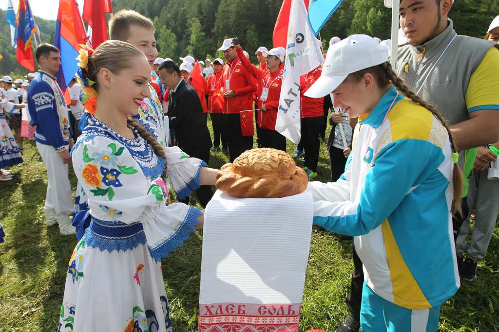

Фестивали

Фестивали в Манжероке проводились еще со времен Советского Союза — музыкальные, для молодежи. Сейчас их количество значительно выросло, и вместо одного за лето могут пройти по 2–4 события.Местом проведения традиционно выбирается турбаза «Манжерок», вокруг которой строится вся необходимая инфраструктура.Тематики у мероприятий разные. Как правило, сезон открывается в конце мая фестивалем бардовской песни, а закрывается байкерским в конец августа.В середине лета в Манжерок приезжают профессиональные музыканты и любители рока на музыкальный фестиваль.
Фестиваль авторской песни на Телецком озере: таких мероприятий даже два. Они проходят в селе Артыбаш — «Золотые песни золотого озера», и в поселке Турочак — «Зелёный рай». Эти события имеют более камерную атмосферу. Во время их проведения специально не ставится оборудование, усиливающее звучание.
Гастрономический фестиваль «Мать Земля Алтай» в Горно-Алтайске — новое событие, которое проходит одновременно с фестивалем меда. Все запланированные мероприятия так или иначе связаны с едой. На нем можно попробовать и приобрести все самое вкусное из алтайской кухни. Также участники проводят мастер-классы, где учат зрителей готовить национальные блюда.
Фестиваль авторской песни на Телецком озере: таких мероприятий даже два. Они проходят в селе Артыбаш — «Золотые песни золотого озера», и в поселке Турочак — «Зелёный рай». Эти события имеют более камерную атмосферу. Во время их проведения специально не ставится оборудование, усиливающее звучание.
Гастрономический фестиваль «Мать Земля Алтай» в Горно-Алтайске — новое событие, которое проходит одновременно с фестивалем меда. Все запланированные мероприятия так или иначе связаны с едой. На нем можно попробовать и приобрести все самое вкусное из алтайской кухни. Также участники проводят мастер-классы, где учат зрителей готовить национальные блюда.